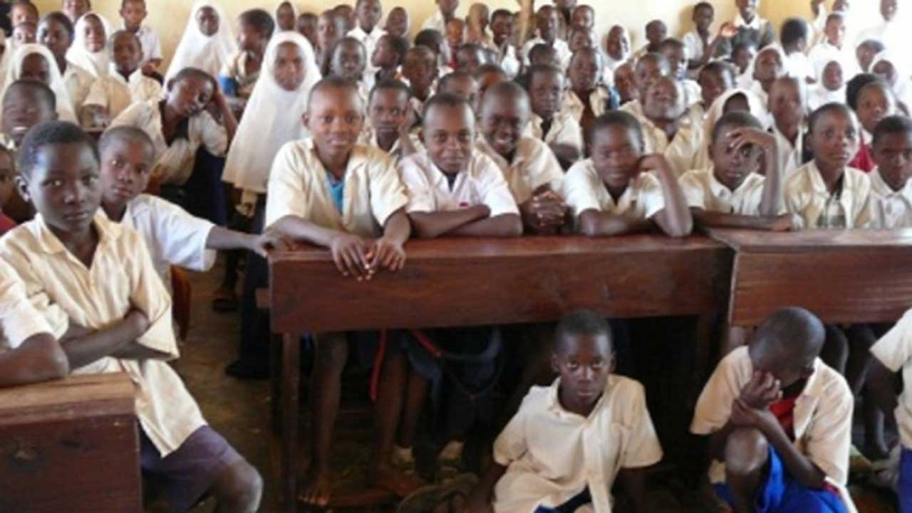
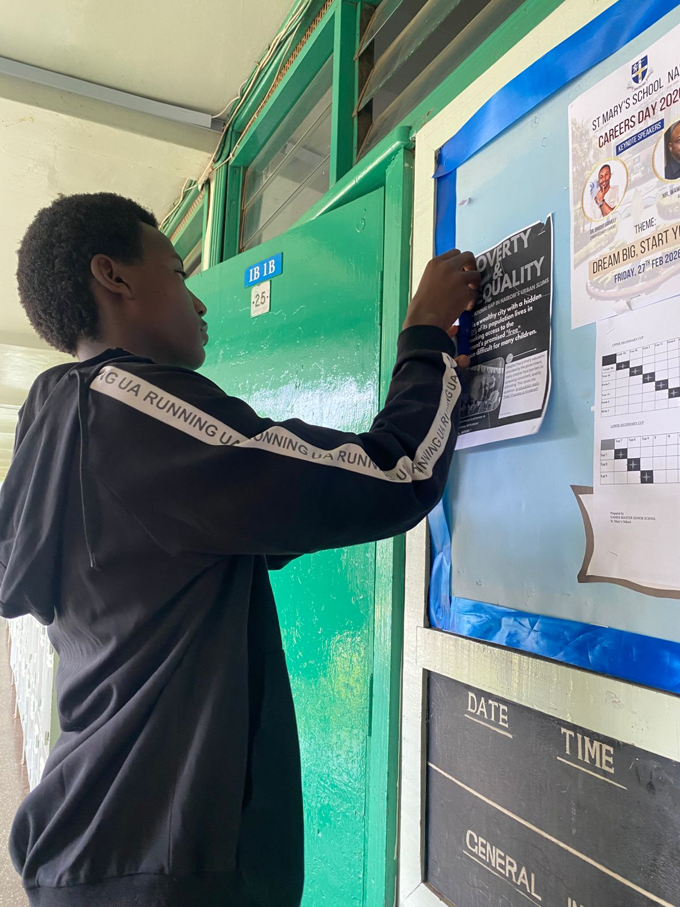
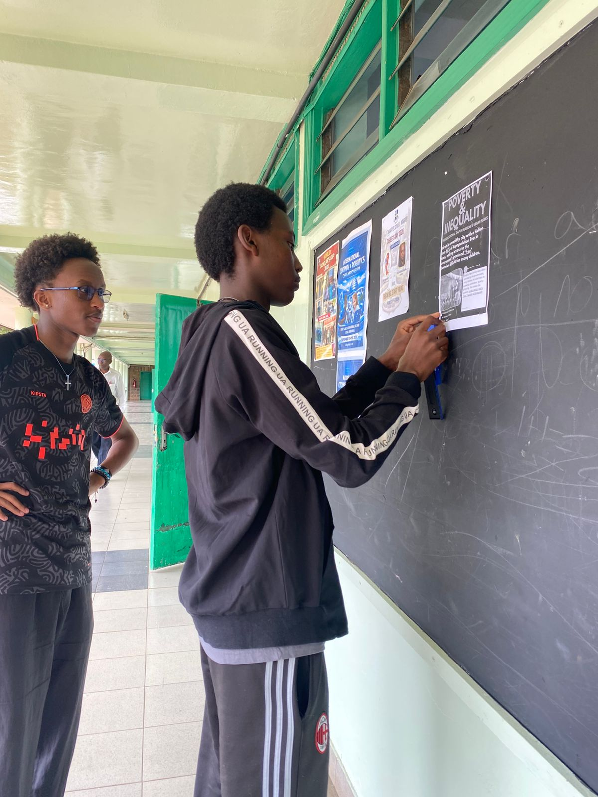
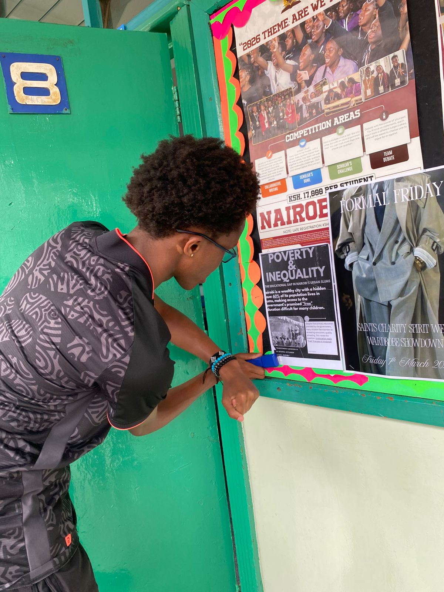

Is “Free” Education
Reaching Everyone?
60% of Nairobi lives in informal settlements. Free primary school exists — but hidden costs & overcrowding leave thousands behind.
Uncover the realityThe reality inside classrooms
Overcrowded classrooms, missing textbooks, and compulsory uniforms turn “free” into a dream. Many children drop out because their families cannot afford transport or opportunity costs.

70+ students per class
In informal settlement schools, it’s common to find three children sharing one desk meant for two. Textbooks are scarce, and teachers struggle to give individual attention.



Research & analysis
Question:
Does poverty and inequality limit children's access to education in Nairobi?
We interviewed multiple teachers, handed out questionaires, and analysed economic data. Findings: material shortages (books, desks) and irregular attendance due to casual labour create a widening learning gap. Even where fees are absent, costs for uniforms, transport, and lunch exclude the poorest.
“Every child should be given access to education”- A Father in St.Mary's School
Sustainable solution
Our approach is community‑driven awareness. We design simple, visual posters explaining:
- Which public schools are really no‑fee
- How to apply for bursaries & uniform funds
- Where to find affordable second‑hand books
These posters will be placed in local shops, churches, and health centres. We also partner with community health volunteers to spread the word orally.
“Peace does not flourish where there is ignorance and a lack of education and information.”- F. W. de Klerk, South African President, 1989-1994
🌍 Free online learning resources
Even when schools are overcrowded, digital learning can bridge the gap. Below you’ll find resources grouped by the curriculum or focus they support: Kenya CBC/KCSE, IGCSE / global academics, Apps & YouTube, and Skills & practical education.
📘 E-Learn Kenya CBC/KCSE/Uni
CBC, secondary & university content, quizzes, AI tutor. Structured revision & exams.
Visit →🎓 LearnCafe Kenya any level
1000+ free courses: science, languages, tech. Self-paced with certificates.
Browse →📖 KICD Digital Content CBC official
Kenya Institute of Curriculum Development – official e‑learning for primary & secondary.
Access →📐 Khan Academy IGCSE / AP
Maths, science, economics – perfect for IGCSE revision. Completely free.
Visit →📚 Z Notes IGCSE/A-Level
Free revision notes, past papers, and study guides for IGCSE and A-Level subjects. Highly organized.
Visit Z Notes →⚛️ Physics & Maths Tutor (PMT) IGCSE/A-Level
Huge collection of past papers, revision notes, and flashcards for science and maths.
Explore PMT →✅ Save My Exams IGCSE/A-Level
Detailed revision notes, topic questions, and past papers (free tier available). Excellent for exam prep.
Start revising →📱 Khan Academy App
Offline access to maths, science, programming. Great for daily practice.
Play/App Store🌍 Duolingo / Photomath / Quizlet
Languages, math problem solver, revision flashcards – all free.
Available on stores🧪 YouTube: Cognito & FuseSchool
IGCSE science & maths explained visually. Excellent for exam prep.
Cognito →MasomoGPT AI tutor
AI tutor for African curricula – free, personalized revision and learning support.
Explore →💡 Tip: Many libraries and community hubs in Nairobi offer free Wi‑Fi. Download materials when connected to study offline. CBC/KCSE platforms follow the Kenyan curriculum; global sites are ideal for IGCSE and advanced concepts.
OUR GOAL
Reach 200+ families by the end of 2026